La representación CAD, o Diseño Asistido por Computadora, es una tecnología que permite a los diseñadores y profesionales de diversas industrias crear y modificar dibujos técnicos y modelos tridimensionales en una computadora. En lugar de utilizar herramientas tradicionales de dibujo manual, como lápices y papel, el CAD aprovecha el poder de la informática para facilitar el diseño y la ingeniería de productos, edificios, maquinaria y mucho más.
En esta situación de aprendizaje trabajaremos con Tinkercad, un programa online y gratuito de la empresa Autodesk, que es líder en el diseño 3D. Tinkercad te permite iniciarte en el diseño 3D de forma fácil, con una interfaz simple y bonita. Pero cuando ya sabes lo básico, te faltan herramientas para hacer diseños más avanzados. Tiene muchas ventajas como su facilidad de usar, su aspecto agradable y con un poco de entretenimiento puedes aprender mucho.
Lectura facilitada
La representación CAD, o Diseño Asistido por Computadora, es una tecnología que utiliza una computadora para crear y modificar dibujos técnicos y modelos tridimensionales en lugar de herramientas manuales tradicionales.
En esta situación de aprendizaje, utilizaremos Tinkercad, un programa de diseño 3D gratuito de Autodesk.
Tinkercad es fácil de usar con una interfaz simple y atractiva, lo que lo hace adecuado para principiantes, pero también ofrece herramientas para diseños más avanzados.
Es una herramienta útil con ventajas como su facilidad de uso y aspecto agradable para aprender sobre diseño 3D.
2. Descubriendo
Al acceder a Tinkercad entraremos directamente a la pantalla de nuestro perfil. Un lugar donde podremos ver nuestros proyectos y crear uno nuevo.
Aquí pulsaremos en "Crear un diseño", de manera que nos llevará a la pantalla de diseño de Tinkercad.
1. ELEMENTOS PANTALLA TINKERCAD
Los elementos más importantes de la pantalla son los siguientes:
BOTÓN TINKERCAD: En la esquina superior izquierda para volver a nuestra pantalla de inicio como usuarios.
NOMBRE DEL DISEÑO: El cual podemos cambiar haciendo clic sobre él.
BARRA DE OPCIONES: En la parte superior izquierda, con las herramientas de copiar, pegar, duplicar, borrar, deshacer y rehacer.
BOTÓN VISTA: Nos permite para controlar el punto de vista de nuestro diseño y el zoom sobre el mismo (aunque ambas opciones se pueden realizar con los botones del ratón).
PANEL OPCIONES VISTA: En la parte central izquierda. Permite reiniciar la vista, ampliar y reducir la misma.
PLANO DE TRABAJO: Es el área de diseño de nuestro dibujo.
AJUSTE DE LA REJILLA: En la parte inferior derecha, permite cambiar las opciones de ésta y la alineación de los objetos a la misma.
PANEL DE PROPIEDADES: Se activa cuando seleccionamos un objeto, permitiéndonos cambiar algunas de sus características como radio, longitud, anchura y altura.
BARRA EDICIÓN: En parte superior derecha, permite realizar modificaciones en los objetos seleccionados.
MENÚS DESPLEGABLES: En la zona derecha, con opciones de diseño directas (formas geométricas, letras, símbolos…).
MENÚ EXPORTAR / IMPORTAR: Permite exportar el diseño a formatos de impresión 3D (obj, stl). Por otro lado, también podemos cargar un modelo ya creado, con otro programa con la opción importar.
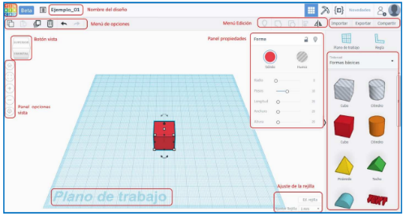
2. AÑADIR OBJETOS
Lo primero que vamos hacer, en nuestro primer diseño, es situar un objeto desde el panel “Formas básicas”. Para ello hacemos clic en la figura “cubo” y lo arrastramos hasta el plano de trabajo.
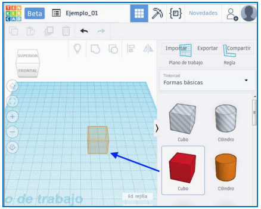
3. ELIMINAR OBJETOS
Eliminar un objetos es bastante sencillo, tan solo tenemos que seleccionarlo y presionar la tecla “Supr”. También podemos pulsar en el botón “Eliminar” del menú de opciones.
4. COPIAR Y DUPLICAR OBJETOS
Se trata de operaciones muy similares. • Para copiar un objeto basta con seleccionarlo y pulsar en el botón “Copiar”. Seguidamente pulsamos en el botón “Pegar”. Observaremos que aparece un nuevo objeto, desplazado de la posición inicial. • Por otro lado, si duplicamos el objeto, éste aparecerá en la misma posición que el original. Para ello basta con pulsar sobre el botón “Duplicar”.
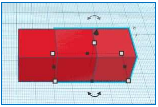
5. REDIMENSIONAR OBJETOS
Al insertarlo aparecerán una serie de símbolos seleccionables en el contorno del cubo.
Los cuadrados blancos sirven para aumentar o disminuir alguna de sus dimensiones (largo, ancho o alto).
Los cuadrados negros tienen la misma función pero desde el punto medio de sus lados o caras.
La flecha negra superior sirve para elevar el cubo respecto del plano de trabajo.
Las flechas en curva nos permiten girarlo respecto de los tres ejes principales (x, y, z).
Para cambiar su tamaño, basta con hacer clic sobre los cuadrados blancos o negros y arrastrar hasta que tenga el tamaño deseado. Para facilitar la operación, la rejilla nos mostrará el valor (en mm) de las nuevas dimensiones.
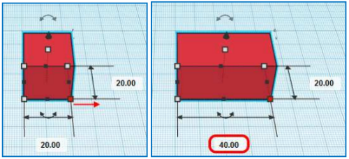
6. GIRAR OBJETOS
La operación de girar se puede realizar en tres planos diferentes:
Plano inferior.
Plano lateral.
Plano posterior.
En cualquiera de ellos, debemos hacer clic y sin soltar, arrastrar sobre la doble flecha del plano elegido. Nos aparecerá un círculo graduado que me indica el ángulo de giro que deseamos dar.
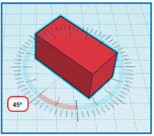
7. MOVER OBJETOS
El movimiento de cualquier objeto también puede ser en los tres ejes. En el plano XY, y modificando su altura, en el eje Z. Para realizar estas operaciones tenemos varias opciones:
Si el movimiento va a ser en elmplano XY, podemos utilizar el ratón (clic sobre el objeto y arrastrar), para situarlo en la nueva posición. En este caso el programa nos muestra, mediante flechas y unidades en mm, el desplazamiento realizado.
También podemos realizar este movimiento con el teclado, utilizando los cursores (flechas izquierda/derecha; arriba/abajo). Si mantenemos pulsada la tecla "MAYÚSCULA", el desplazamiento será de 10 unidades.
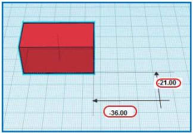
Si el movimiento queremos que sea en altura (elevación), es decir sobre el eje Z, podemos hacerlo con el ratón, haciendo clic y arrastrando, en la flecha negra superior. También podemos realizar esta operación con los cursores pero manteniendo pulsada la tecla CTRL.
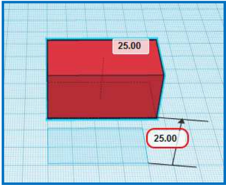
8. EDITAR OBJETOS
En este apartado, realizaremos operaciones en las que intervengan dos o más objetos. Nos permitirán construir diseños más complejos partiendo de objetos sencillos. Utilizaremos la barra de herramientas Edición.
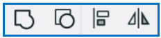
8.1. AGRUPAR OBJETOS
Esta herramienta nos permite unir dos o más objetos como si fueran una sola entidad. Para ello seleccionamos los objetos que nos interesen y pulsamos en el botón “Agrupar” (primer botón de los cuatro botones). Observaremos que los objetos agrupados presentarán el mismo color.
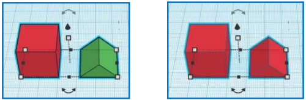
8.2. DESAGRUPAR OBJETOS
En este caso, se trata de realizar la operación inversa, seleccionamos un objeto y los separamos en dos o más unidades simples. Para ello pulsamos en el botón “Desagrupar” (segundo botón).
8.3. ALINEAR OBJETOS
Esta herramienta nos permite alinear objetos a partir de los “puntos de alineación” que presenta cada objeto. Estos puntos solo aparecen, una vez seleccionados los objetos, cuando pulsamos en el botón “Alinear”. La opción alinear se puede aplicar sucesivamente hasta conseguir el resultado deseado.
Las opciones que tenemos para realizar esta alineación son:
Horizontal: Mediante los 3 puntos en el frente.
Lateral: Tanto izquierda como derecha.
Centro: Alineará los objetos horizontalmente por sus centros.
Vertical: Los 3 puntos en el frente son alinear verticalmente.
Superior /Inferior: Alinearán dos objetos por los bordes superior o inferior.
Centro vertical: Alinea los objetos verticalmente por sus centros.
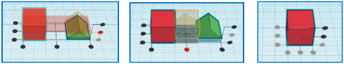
8.4. INVERTIR OBJETOS
Esta herramienta permite crear objetos simétricos, en función del eje que seleccionemos. Para ello seleccionamos el objeto, pueden ser varios y pulsamos en el botón “Invertir”. Nos aparecerán los tres ejes de simetría que podemos seleccionar (X, Y, Z).
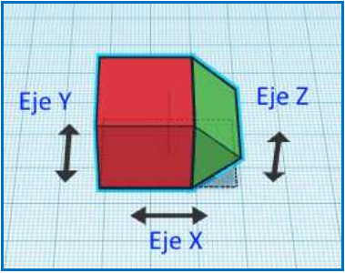
Al llevar el ratón sobre uno de los ejes, el programa nos muestra una vista previa del resultado de la operación. Si nos interesa hacer la simetría basta con hacer clic sobre el eje.
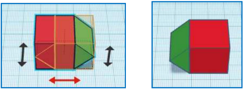
8.5. CREAR HUECOS EN OBJETOS
Se trata de una operación que nos permite incorporar cavidades huecas, en los diferentes objetos de nuestro diseño.
Necesitamos dos objetos, uno de mayor tamaño y otro de menor. Este último será el que defina la cavidad hueca a realizar.
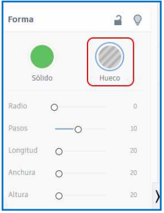 Una vez que tengamos los dos objetos realizamos:
Situamos el objeto pequeño sobre el grande, en el lugar donde queramos realizan el hueco.
Seleccionamos el objeto que define el hueco. En el panel “Forma” marcamos la opción “Hueco”.
Seleccionamos ambos objetos y pulsamos en el botón “Agrupar”.
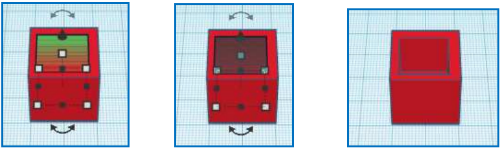
9. EXPORTAR PARA IMPRESIÓN EN 3D
El proceso para generar un archivo imprimible a partir de Tinkercad es muy sencillo:
Seleccionamos en el menú superior izquierdo la opción “Exportar”
Nos aparecerá un cuadro donde podemos elegir la extensión .STL6, (también OBJ7 ), apta para ser configurada por un programa laminador que nos permita la impresión 3D (como puede ser Makerbot, Slic3r, Repetier-Host…).
Por último, nos aparece el cuadro “Abrir diseño” con el cual podemos
Guardar el archivo, para su posterior impresión.
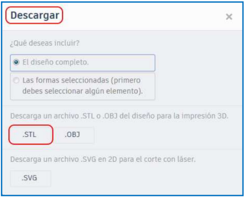
10. IMPORTAR UN ARCHIVO DE OTROS PROGRAMAS
En Tinkercad puedes importar archivos en .STL y realizar modificaciones a los mismos.
Para importar un archivo sólo tienes que ir al menú lateral derecho y elegir la opción “Importar” y ahí “Seleccionar” o “Arrastrar” el archivo.
Tras cargar el archivo que hayamos seleccionado de nuestro ordenador aparecerá en el Plano de trabajo.
Algunos diseños si son archivos muy pesados, (tamaño máximo 25 MB) pueden dar problemas y no cargarse en Tinkercad.
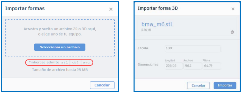
Lectura facilitada
Al usar Tinkercad, comienzas en la pantalla de tu perfil, donde puedes ver proyectos existentes y crear uno nuevo.
Aquí, seleccionas "Crear un diseño" para acceder a la pantalla de diseño de Tinkercad.
Elementos en la Pantalla de Tinkercad:
Botón Tinkercad: Te lleva a la pantalla de inicio.
Nombre del Diseño: Puedes cambiarlo haciendo clic en él.
Barra de Opciones: En la esquina superior izquierda, con herramientas como copiar, pegar, etc.
Botón Vista: Controla el punto de vista y el zoom de tu diseño.
Panel Opciones Vista: Permite reiniciar y cambiar el zoom.
Plano de Trabajo: El área de diseño principal.
Ajuste de la Rejilla: Cambia opciones de la rejilla y alineación.
Panel de Propiedades: Activa al seleccionar un objeto y cambia sus características.
Barra de Edición: Realiza modificaciones en objetos seleccionados.
Menús Desplegables: Ofrecen opciones de diseño directas.
Menú Exportar/Importar: Exporta a formatos de impresión 3D o importa diseños.
Agregar Objetos: Arrastra un objeto desde "Formas Básicas" a tu plano de trabajo.
Eliminar Objetos: Selecciona un objeto y presiona "Supr" o usa el botón "Eliminar".
Copiar y Duplicar Objetos: Copia y pega objetos o duplica un objeto existente.
Redimensionar Objetos: Haz clic en los cuadrados blancos o negros en el contorno del objeto y arrastra para cambiar su tamaño.
Girar Objetos: Arrastra la doble flecha en el plano de tu elección para girar el objeto.
Mover Objetos: Utiliza el ratón o los cursores para mover objetos en el plano XY o cambiar la altura en el eje Z.
Editar Objetos: Puedes agrupar, desagrupar, alinear, invertir y crear huecos en objetos.
Exportar para Impresión 3D: Selecciona "Exportar" y elige el formato .STL para configurar la impresión 3D.
Importar un Archivo de Otros Programas: Ve a "Importar" y selecciona o arrastra un archivo .STL para editarlo en Tinkercad.
3. En vídeo
4. ¡No te desvíes!
Ahora realiza en Tinkercad los siguientes tres ejercicios siguiendo las indicaciones de los vídeos.
Ejercicio 1
Ejercicio 2
Ejercicio 3
Ejercicio 4
Motus dice ¿Qué es lo que más te ha gustado de la interacción con tus compañeros?
¿Te ha llamado la atención alguna pregunta planteada por alguno de ellos? ¿Se lo has dicho? ¡A todos y todas nos gusta saber lo que hacemos bien!
 La representación CAD, o Diseño Asistido por Computadora, es una tecnología que permite a los diseñadores y profesionales de diversas industrias crear y modificar dibujos técnicos y modelos tridimensionales en una computadora. En lugar de utilizar herramientas tradicionales de dibujo manual, como lápices y papel, el CAD aprovecha el poder de la informática para facilitar el diseño y la ingeniería de productos, edificios, maquinaria y mucho más.
La representación CAD, o Diseño Asistido por Computadora, es una tecnología que permite a los diseñadores y profesionales de diversas industrias crear y modificar dibujos técnicos y modelos tridimensionales en una computadora. En lugar de utilizar herramientas tradicionales de dibujo manual, como lápices y papel, el CAD aprovecha el poder de la informática para facilitar el diseño y la ingeniería de productos, edificios, maquinaria y mucho más. Ahora realiza en Tinkercad los siguientes tres ejercicios siguiendo las indicaciones de los vídeos.
Ahora realiza en Tinkercad los siguientes tres ejercicios siguiendo las indicaciones de los vídeos.